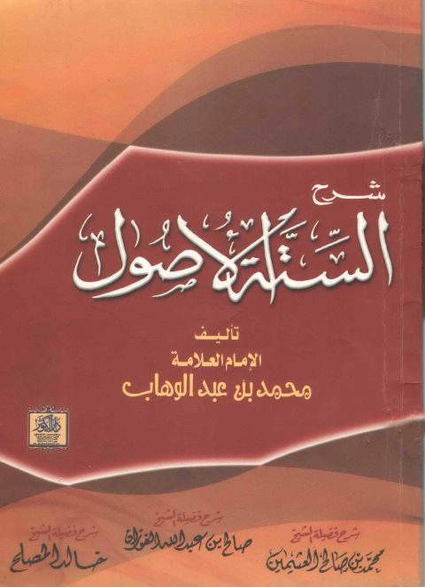
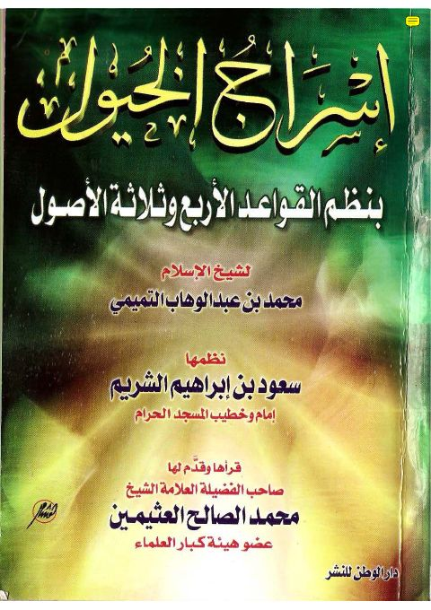
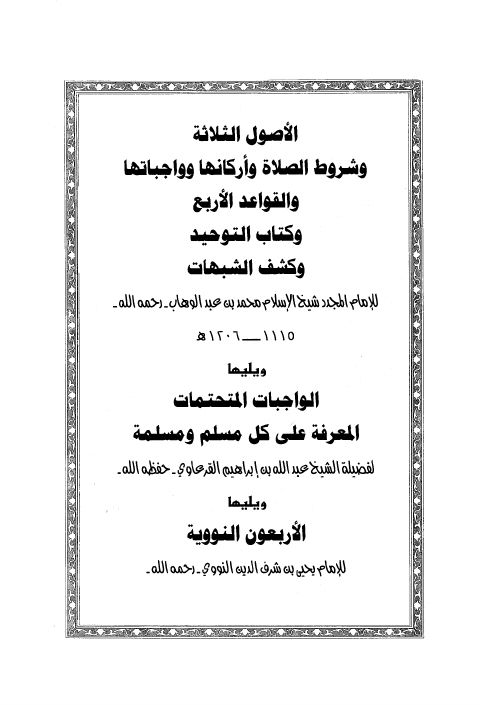
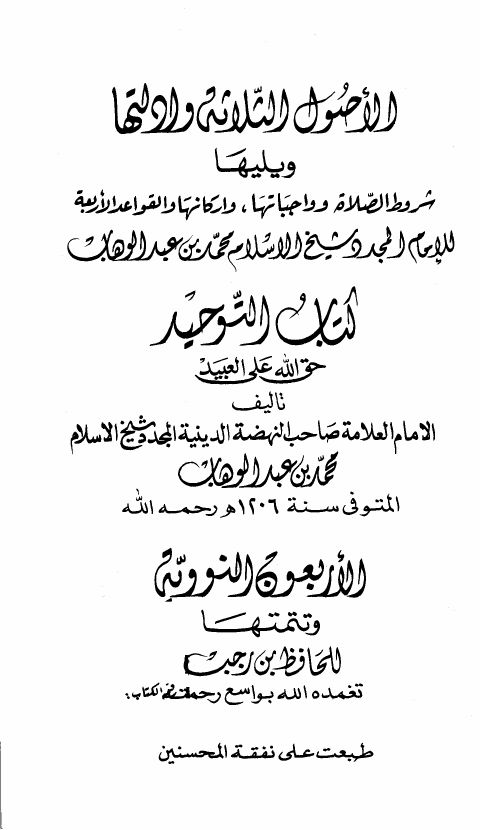

شرح الستة الأصول- دار الكوثر شرح الستة الأصول- دار الكوثر محمد بن عبد الوهاب التميمي
إسراج الخيول بنظم القواعد الأربع وثلاثة الأصول إسراج الخيول بنظم القواعد الأربع وثلاثة الأصول محمد بن عبد الوهاب التميمي
الأصول الثلاثة وشروط الصلاة وأركانها وواجباتها والقواعد الأربع وكتاب التوحيد وكشف الشبهات، ويليها الواجبات المتحتمات والأربعون النووية الأصول الثلاثة وشروط الصلاة وأركانها وواجباتها والقواعد الأربع وكتاب التوحيد وكشف الشبهات، ويليها الواجبات المتحتمات والأربعون النووية محمد بن عبد الوهاب التميمي • عبد الله القرعاوي • يحيى بن شرف النووي
الأصول الثلاثة وأدلتها ويليه شروط الصلاة وكتاب التوحيد والأربعين النووية - ط مطابع القصيم الأصول الثلاثة وأدلتها ويليه شروط الصلاة وكتاب التوحيد والأربعين النووية - ط مطابع القصيم محمد بن عبد الوهاب التميمي • ابن رجب